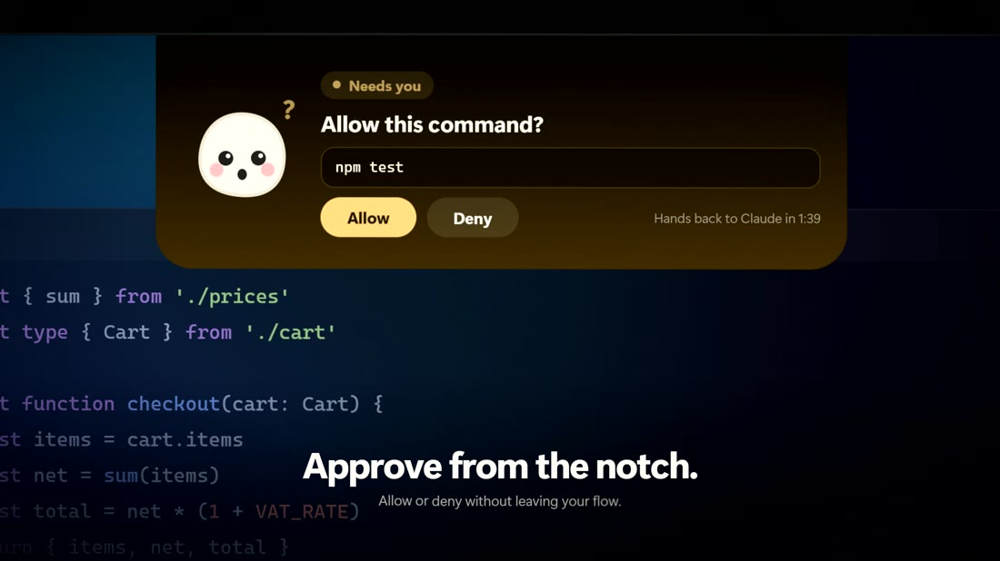
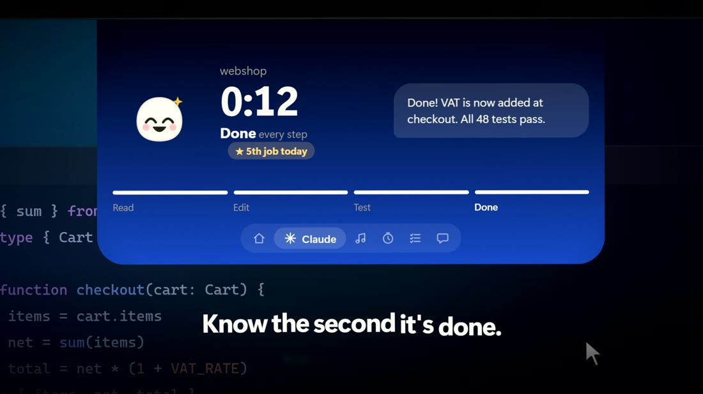
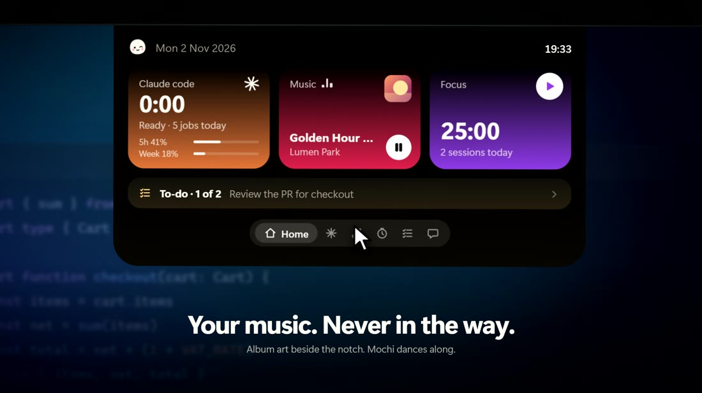
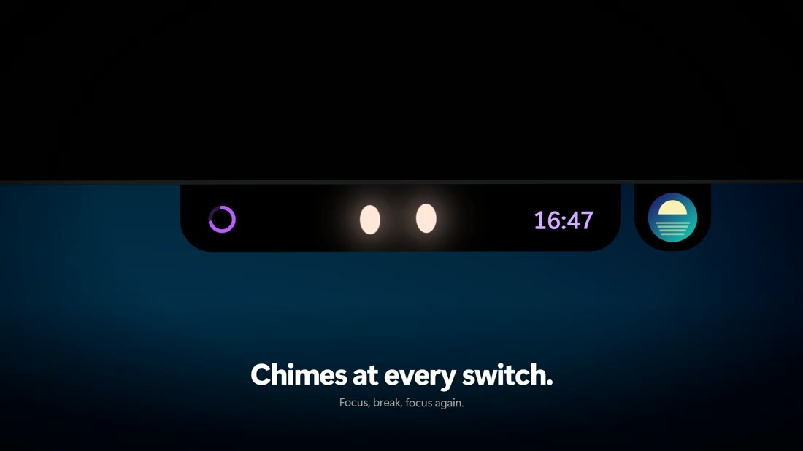
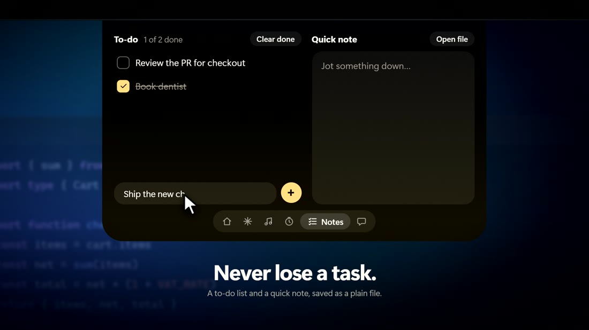
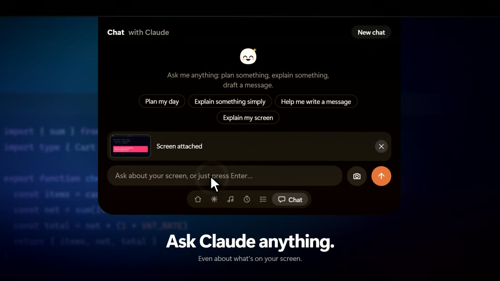
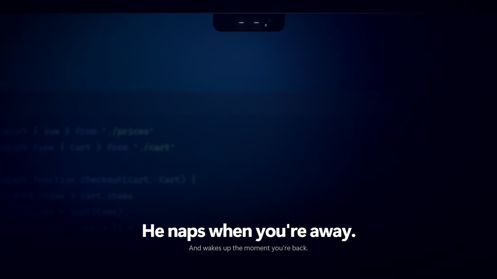

Approve from the notch
When Claude Code needs your OK, the notch opens with Allow and Deny. No window hunting, no lost flow.

Mochi is a tiny notch at the top of your screen. It shows what Claude Code is doing, lets you approve actions, controls your music, times your focus and keeps your to-dos.
No account Runs on your PC Early version
npm test
This is a mock-up of the real thing. Pick a state, or press Allow.
The film
Every frame is the real Mochi interface. Nothing is faked with video effects.
The film could not play here. Download it or see the repository.
Meet Mochi. Your whole day, one hover away: Claude, music, focus and notes right in the notch. Give Claude a task, then get on with your day. Mochi watches Claude work, asks you to allow or deny commands, and chimes with a tiny celebration when it's done. Music sits beside the notch. A Pomodoro timer chimes at every switch. A to-do list and quick note are saved as a plain file. Ask Claude anything, even about your screen. Mochi naps when you're away and reminds you to rest your eyes. Mochi: your Claude Code, living in the notch.
What's inside
Hover over the notch and it opens. Move away and it tucks back into the edge.
When Claude Code needs your OK, the notch opens with Allow and Deny. No window hunting, no lost flow.

Live progress while Claude works. A soft chime and a tiny celebration when it finishes.

Apple Music art and controls next to the notch. Mochi dances along.

25 minutes on, 5 off, with a chime at every switch.

A to-do list and a quick note, saved as a plain file you own.

Chat with Claude, Gemini, ChatGPT or a model on your own PC, even about what's on your screen.

And wakes up the moment you're back. He'll also nudge you to rest your eyes.

Your choice of AI
Pick who answers from the top of the Chat tab. Your key is encrypted by Windows and only ever sent to the AI you picked.
Uses your Claude Code login. Counts toward your normal Claude plan.
Paste a free key from Google AI Studio. Free-tier limits apply.
Paste an OpenAI API key. OpenAI bills per use, separately from a ChatGPT subscription.
Runs on your own PC. Private, no account, needs Ollama installed.
Get started
No account or sign-up. It installs for you only and needs no admin rights.
Press Download for Windows and save Mochi-Setup.
Double-click the file and let it install. Mochi opens by itself.
It sits at the top of your screen. Settings live in the tray icon.
Windows may warn you. The installer isn't signed with a paid certificate yet, so Windows shows "Windows protected your PC". Choose More info, then Run anyway. If you'd rather not, the source code is on GitHub to read or build yourself.
Using Claude Code? Right-click the tray icon, choose Claude Code connection, then Connect, and start a new Claude Code session. A backup of your Claude settings is made first.
Privacy
Mochi has no servers and no accounts. There's nothing to sign up for and nothing for us to collect.
Mochi talks to your own computer, protected by a private token.
Notes, settings and keys live in a folder on your PC. Keys are encrypted by Windows.
Chat goes only to the AI you picked. Screenshots are taken only when you press the camera button.
Uninstall from Windows Settings. Disconnecting from Claude Code is one click.
FAQ
No. Music, Focus, notes and chat work without it. Claude Code is what makes the notch show live work and ask for approvals.
The installer isn't signed with a paid certificate yet, so Windows treats it as unknown. Choose More info, then Run anyway. The source code is in the GitHub repository.
Mochi is free. Gemini has a free tier and Ollama is free. ChatGPT needs a paid OpenAI API key, billed by OpenAI and not by Mochi.
Windows 10 and 11 only for now. With several monitors, choose which one shows the notch from the tray menu.
Mochi adds its hooks to your Claude settings and makes a backup first. If Mochi isn't running, the hooks do nothing, so Claude Code is never blocked. You can disconnect from the tray at any time.
There's no auto-update yet. Download the newest installer from the Releases page and run it over the old one. Your notes and settings are kept.
Quit Mochi from the tray and open it again. If it keeps happening, open an issue on GitHub and attach .mochi\mochi.log from your user folder.
Your Claude Code, living in the notch. Free, private and ready in a minute.